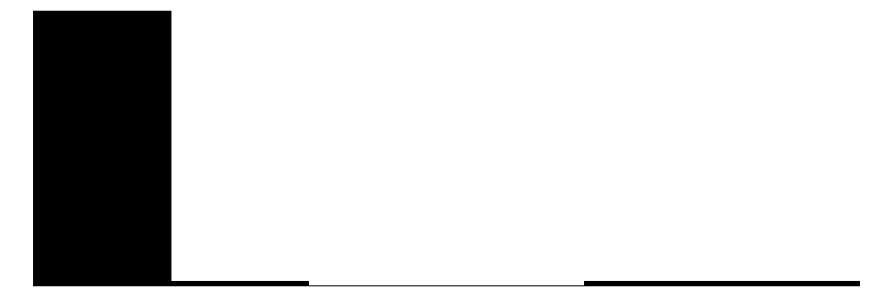
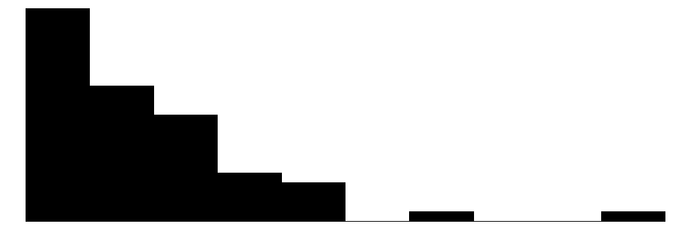
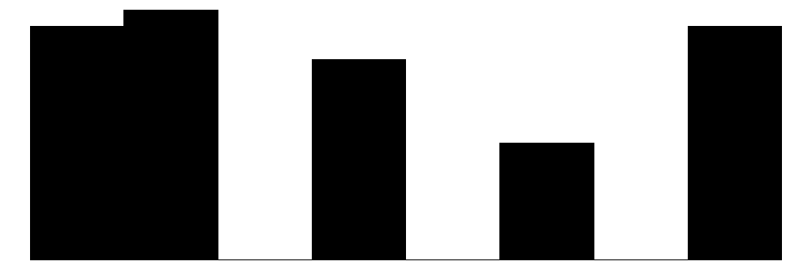
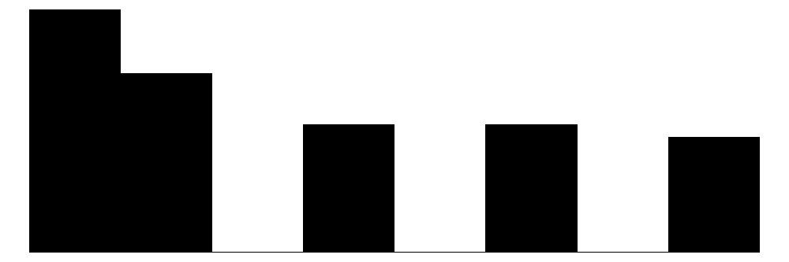
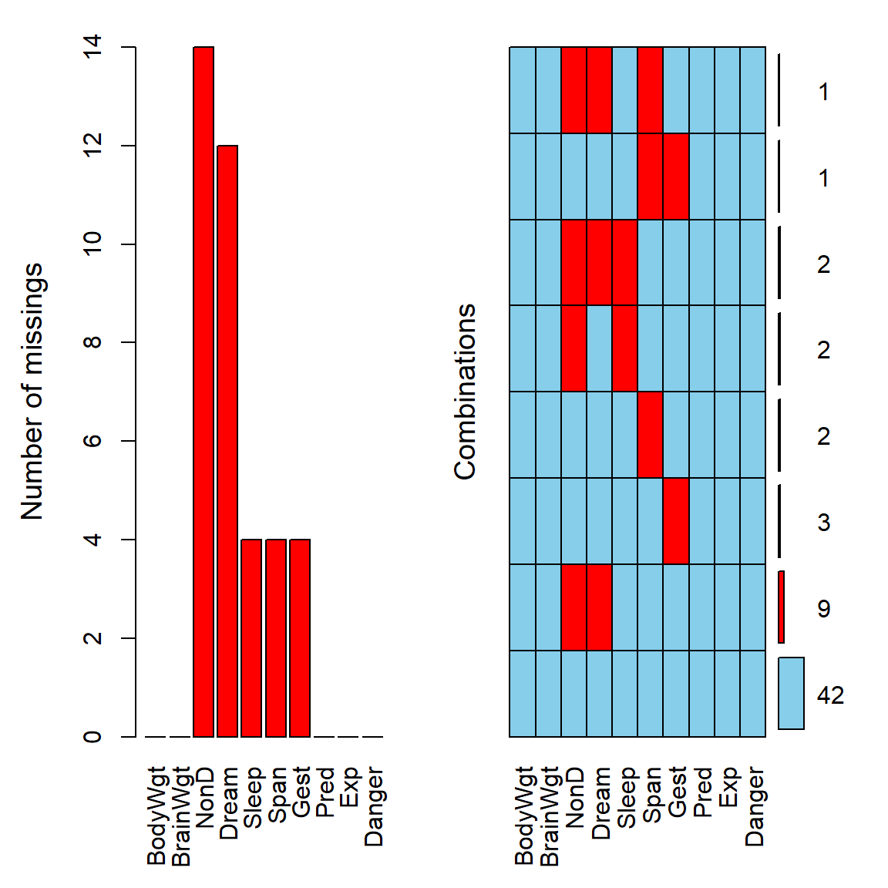
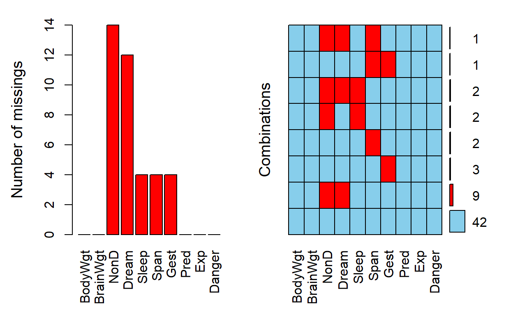

1.3.4: Missing Data and Sampling Weights (brief intro)
(In Person)
COMING SUMMER 2025
Module “1.3.4: Missing Data and Sampling Weights” will be posted prior to the In-Person Workshops in Summer 2025.
Session Objectives
- Identify and summarize missing data.
- Learn methods to handle missing data according to variable type.
- Use a survey sampling weight to generate more representative descriptive and inferential statistical values (brief intro)
- Discuss potential bias when removing missing observations without careful examination.
[to be removed………….]
Key points:
- R packages that support missing data examination
- Mean/median imputation for continuous variables
- What to do with missing observations for categorical variables
- Ways to examine potential differences between complete and missing observations in association between certain independent and dependent variables
- What to do if such association significantly differs between complete and missing observations
- R packages for complex survey data (e.g., survey package)
- R codes to generate weighted descriptive statistics and contingency tables, as well as to develop weighted linear models
0. Prework - Before You Begin
Install Packages
Before you begin, please go ahead and install the following packages - these are all on CRAN, so you can install them using the RStudio Menu “Tools/Install” Packages interface:
-
VIMon CRAN andVIMpackage website -
skimron CRAN andskimrwebsite - OPTIONAL -
modelsummaryon CRAN andmodelsummarywebsite - OPTIONAL -
tinytableon CRAN andtinytablewebsite - OPTIONAL -
summarytoolson CRAN andsummarytoolson Github - OPTIONAL - mice
- mi
palmerpenguinson CRAN
See Module 1.3.1 on Installing Packages
See additional resources below…
add to prework?
Begin with a NEW RStudio Project
Let’s begin with a new RStudio Project.
1. Identify and summarize missing data.
Find Missing Data in Your Dataset.
One simple way to find missing data is to open it in the Data Viewer window and sort the data.
For example, load the VIM package and take a look at the sleep dataset provided within this package.
Click on the sleep dataset to open it in the data viewer:

Notice the light grey NAs shown for the missing data spots in this dataset.
If we click on the column for the Dream variable and sort these values, notice that the NAs all now show up at the bottom of the viewer window. It does not matter if you sort ascending or descending, the NAs are always at the bottom of the viewer.

This method is ok for a small dataset with not too many variables or rows of data. But let’s look at other ways to summarize the amounts of missing data in your dataset.
Describe Missing Data.
Built-in summary() function
As we saw back in Module 1.3.2, Section 5, we can use the summary() function to get some basic statistics for each variable in the dataset, including the number of NAs.
summary(sleep) BodyWgt BrainWgt NonD Dream
Min. : 0.005 Min. : 0.14 Min. : 2.100 Min. :0.000
1st Qu.: 0.600 1st Qu.: 4.25 1st Qu.: 6.250 1st Qu.:0.900
Median : 3.342 Median : 17.25 Median : 8.350 Median :1.800
Mean : 198.790 Mean : 283.13 Mean : 8.673 Mean :1.972
3rd Qu.: 48.203 3rd Qu.: 166.00 3rd Qu.:11.000 3rd Qu.:2.550
Max. :6654.000 Max. :5712.00 Max. :17.900 Max. :6.600
NA's :14 NA's :12
Sleep Span Gest Pred
Min. : 2.60 Min. : 2.000 Min. : 12.00 Min. :1.000
1st Qu.: 8.05 1st Qu.: 6.625 1st Qu.: 35.75 1st Qu.:2.000
Median :10.45 Median : 15.100 Median : 79.00 Median :3.000
Mean :10.53 Mean : 19.878 Mean :142.35 Mean :2.871
3rd Qu.:13.20 3rd Qu.: 27.750 3rd Qu.:207.50 3rd Qu.:4.000
Max. :19.90 Max. :100.000 Max. :645.00 Max. :5.000
NA's :4 NA's :4 NA's :4
Exp Danger
Min. :1.000 Min. :1.000
1st Qu.:1.000 1st Qu.:1.000
Median :2.000 Median :2.000
Mean :2.419 Mean :2.613
3rd Qu.:4.000 3rd Qu.:4.000
Max. :5.000 Max. :5.000
skimr package
Another helpful package is the skimr package which has the skim() function which provides a count of the amount of missing data and the proportion of complete data for that variable.
skimr package
When “knitting” to HTML the code below creates the summary table with the miniture histograms. However, when “knitting” to PDF (using the default portrait layout)m the histograms get cutoff on the page. Additional LaTex customization is needed to change the layout to landscape to be able to see the histograms.
| Name | sleep |
| Number of rows | 62 |
| Number of columns | 10 |
| _______________________ | |
| Column type frequency: | |
| numeric | 10 |
| ________________________ | |
| Group variables | None |
Variable type: numeric
| skim_variable | n_missing | complete_rate | mean | sd | p0 | p25 | p50 | p75 | p100 | hist |
|---|---|---|---|---|---|---|---|---|---|---|
| BodyWgt | 0 | 1.00 | 198.79 | 899.16 | 0.00 | 0.60 | 3.34 | 48.20 | 6654.0 | ▇▁▁▁▁ |
| BrainWgt | 0 | 1.00 | 283.13 | 930.28 | 0.14 | 4.25 | 17.25 | 166.00 | 5712.0 | ▇▁▁▁▁ |
| NonD | 14 | 0.77 | 8.67 | 3.67 | 2.10 | 6.25 | 8.35 | 11.00 | 17.9 | ▅▇▆▃▂ |
| Dream | 12 | 0.81 | 1.97 | 1.44 | 0.00 | 0.90 | 1.80 | 2.55 | 6.6 | ▇▇▃▁▁ |
| Sleep | 4 | 0.94 | 10.53 | 4.61 | 2.60 | 8.05 | 10.45 | 13.20 | 19.9 | ▅▅▇▃▃ |
| Span | 4 | 0.94 | 19.88 | 18.21 | 2.00 | 6.62 | 15.10 | 27.75 | 100.0 | ▇▃▁▁▁ |
| Gest | 4 | 0.94 | 142.35 | 146.81 | 12.00 | 35.75 | 79.00 | 207.50 | 645.0 | ▇▃▁▁▁ |
| Pred | 0 | 1.00 | 2.87 | 1.48 | 1.00 | 2.00 | 3.00 | 4.00 | 5.0 | ▇▇▆▃▇ |
| Exp | 0 | 1.00 | 2.42 | 1.60 | 1.00 | 1.00 | 2.00 | 4.00 | 5.0 | ▇▃▁▂▃ |
| Danger | 0 | 1.00 | 2.61 | 1.44 | 1.00 | 1.00 | 2.00 | 4.00 | 5.0 | ▇▆▅▅▃ |
modelsummary package
Another helpful package is the modelsummary package which has the datasummary_skim() function which is a slightly better version built off the skimr::skim() package and function.
modelsummary package
The tinytable package is also used below with the modelsummary output to better control the placement of the resulting table when “knitting” to PDF.
library(modelsummary)
library(tinytable)
datasummary_skim(sleep) %>%
theme_tt("placement", latex_float = "H")| Unique | Missing Pct. | Mean | SD | Min | Median | Max | Histogram | |
|---|---|---|---|---|---|---|---|---|
| BodyWgt | 60 | 0 | 198.8 | 899.2 | 0.0 | 3.3 | 6654.0 |  |
| BrainWgt | 59 | 0 | 283.1 | 930.3 | 0.1 | 17.2 | 5712.0 |  |
| NonD | 40 | 23 | 8.7 | 3.7 | 2.1 | 8.4 | 17.9 | |
| Dream | 31 | 19 | 2.0 | 1.4 | 0.0 | 1.8 | 6.6 |  |
| Sleep | 45 | 6 | 10.5 | 4.6 | 2.6 | 10.4 | 19.9 |  |
| Span | 48 | 6 | 19.9 | 18.2 | 2.0 | 15.1 | 100.0 |  |
| Gest | 50 | 6 | 142.4 | 146.8 | 12.0 | 79.0 | 645.0 |  |
| Pred | 5 | 0 | 2.9 | 1.5 | 1.0 | 3.0 | 5.0 |  |
| Exp | 5 | 0 | 2.4 | 1.6 | 1.0 | 2.0 | 5.0 |  |
| Danger | 5 | 0 | 2.6 | 1.4 | 1.0 | 2.0 | 5.0 |  |
summarytools package
Another package that also provides a nice summary of the variables in the dataset, is the dfSummary() from the summarytools dataset.
NOTE: Learn more about how to use summarytools::dfSummary() in an Rmarkdown document at https://cran.r-project.org/web/packages/summarytools/vignettes/rmarkdown.html.
library(summarytools)
view(dfSummary(sleep))
library(palmerpenguins)
summary(penguins) species island bill_length_mm bill_depth_mm
Adelie :152 Biscoe :168 Min. :32.10 Min. :13.10
Chinstrap: 68 Dream :124 1st Qu.:39.23 1st Qu.:15.60
Gentoo :124 Torgersen: 52 Median :44.45 Median :17.30
Mean :43.92 Mean :17.15
3rd Qu.:48.50 3rd Qu.:18.70
Max. :59.60 Max. :21.50
NA's :2 NA's :2
flipper_length_mm body_mass_g sex year
Min. :172.0 Min. :2700 female:165 Min. :2007
1st Qu.:190.0 1st Qu.:3550 male :168 1st Qu.:2007
Median :197.0 Median :4050 NA's : 11 Median :2008
Mean :200.9 Mean :4202 Mean :2008
3rd Qu.:213.0 3rd Qu.:4750 3rd Qu.:2009
Max. :231.0 Max. :6300 Max. :2009
NA's :2 NA's :2 skim(penguins)| Name | penguins |
| Number of rows | 344 |
| Number of columns | 8 |
| _______________________ | |
| Column type frequency: | |
| factor | 3 |
| numeric | 5 |
| ________________________ | |
| Group variables | None |
Variable type: factor
| skim_variable | n_missing | complete_rate | ordered | n_unique | top_counts |
|---|---|---|---|---|---|
| species | 0 | 1.00 | FALSE | 3 | Ade: 152, Gen: 124, Chi: 68 |
| island | 0 | 1.00 | FALSE | 3 | Bis: 168, Dre: 124, Tor: 52 |
| sex | 11 | 0.97 | FALSE | 2 | mal: 168, fem: 165 |
Variable type: numeric
| skim_variable | n_missing | complete_rate | mean | sd | p0 | p25 | p50 | p75 | p100 | hist |
|---|---|---|---|---|---|---|---|---|---|---|
| bill_length_mm | 2 | 0.99 | 43.92 | 5.46 | 32.1 | 39.23 | 44.45 | 48.5 | 59.6 | ▃▇▇▆▁ |
| bill_depth_mm | 2 | 0.99 | 17.15 | 1.97 | 13.1 | 15.60 | 17.30 | 18.7 | 21.5 | ▅▅▇▇▂ |
| flipper_length_mm | 2 | 0.99 | 200.92 | 14.06 | 172.0 | 190.00 | 197.00 | 213.0 | 231.0 | ▂▇▃▅▂ |
| body_mass_g | 2 | 0.99 | 4201.75 | 801.95 | 2700.0 | 3550.00 | 4050.00 | 4750.0 | 6300.0 | ▃▇▆▃▂ |
| year | 0 | 1.00 | 2008.03 | 0.82 | 2007.0 | 2007.00 | 2008.00 | 2009.0 | 2009.0 | ▇▁▇▁▇ |
Visualize Missing Data.
Making plots with VIM package
The VIM package has an “aggregate” function aggr() which counts up the amounts of missing data for each variable and combinations of variables. The sleep dataset only has 10 variables.
Before using the aggr() function, limit the number of variables. FIRST create a dataset with only the variables you are interested in BEFORE running the function - otherwise you may lock up your computer if you feed it too many variables at once.
# get a quick count of the amount of missing
# data in the sleep dataset for each variable
a <- aggr(sleep, plot = FALSE)
a
Missings in variables:
Variable Count
NonD 14
Dream 12
Sleep 4
Span 4
Gest 4The default output from above only lists the variables that have one or more rows with missing data. However, you can get a complete list with:
a$missings Variable Count
BodyWgt BodyWgt 0
BrainWgt BrainWgt 0
NonD NonD 14
Dream Dream 12
Sleep Sleep 4
Span Span 4
Gest Gest 4
Pred Pred 0
Exp Exp 0
Danger Danger 0Next let’s get some plots.
The plot on the LEFT below is a simple bar plot showing the missing counts for each variable in the dataset.
-
Also notice that there are only 5 variables with one or more missing values:
NonDDreamSleepSpanGest
The plot on the RIGHT however, shows the amounts of missing data for the various patterns of missing data for the 10 variables in the sleep dataset.
For example, notice that of the 62 rows of data in the sleep dataset:
- there are only 42 rows with complete data with no missing data on all 10 variables;
- the next largest “pattern” of missing data is 9 rows that are missing both
NonDandDreamvariables.; and - there are 3 rows of data with the
gestvariable with missing data.
# make plots of the amounts and patterns of missing data
plot(a, numbers = TRUE, prop = FALSE)
Marginplots - see how missingness varys with other measures
In addition to a usual scatterplot, the marginplot() function in the VIM package, also shows information about missing values in the plot margins.
The red boxplot on the left shows the distrubution of all values of Sleep where Dream contains a missing value. The blue boxplot on the left shows the distribution of the values of Sleep where Dream is observed.
x <- sleep[, c("Dream", "Sleep")]
marginplot(x)
Visualize Missing Data with the naniar package
The naniar package “provides principled, tidy ways to summarise, visualise, and manipulate missing data with minimal deviations from the workflows in ggplot2 and tidy data.” See naniar website.
For example, let’s make a similar to plot to what we did above to visualize the scatterplot between Dream and Sleep but also consider the amounts of missing data of one variable relative to the other variable in the plot. We can do this using the geom_miss_point() function provided in the naniar package which works with ggplot2.

2. Learn methods to handle missing data according to variable type.
discuss pairwise versus listwise and discuss impacts on modeling especially for stepwise variable selection - always check the final N for each model
show correlations pairwise and listwise
add details on modeling adjustments - covariate predicted missingness
options on imputation - brief intro
sleep$NonD_missing <-
as.numeric(is.na(sleep$NonD))
correlation::correlation(sleep)# Correlation Matrix (pearson-method)
Parameter1 | Parameter2 | r | 95% CI | t | df | p
---------------------------------------------------------------------------
BodyWgt | BrainWgt | 0.93 | [ 0.89, 0.96] | 20.28 | 60 | < .001***
BodyWgt | NonD | -0.38 | [-0.60, -0.10] | -2.75 | 46 | 0.211
BodyWgt | Dream | -0.11 | [-0.38, 0.17] | -0.76 | 48 | > .999
BodyWgt | Sleep | -0.31 | [-0.52, -0.05] | -2.42 | 56 | 0.418
BodyWgt | Span | 0.30 | [ 0.05, 0.52] | 2.37 | 56 | 0.441
BodyWgt | Gest | 0.65 | [ 0.47, 0.78] | 6.42 | 56 | < .001***
BodyWgt | Pred | 0.06 | [-0.19, 0.30] | 0.46 | 60 | > .999
BodyWgt | Exp | 0.34 | [ 0.10, 0.54] | 2.78 | 60 | 0.186
BodyWgt | Danger | 0.13 | [-0.12, 0.37] | 1.04 | 60 | > .999
BodyWgt | NonD_missing | 0.23 | [-0.02, 0.45] | 1.80 | 60 | > .999
BrainWgt | NonD | -0.37 | [-0.59, -0.10] | -2.69 | 46 | 0.226
BrainWgt | Dream | -0.11 | [-0.37, 0.18] | -0.73 | 48 | > .999
BrainWgt | Sleep | -0.36 | [-0.56, -0.11] | -2.87 | 56 | 0.156
BrainWgt | Span | 0.51 | [ 0.29, 0.68] | 4.43 | 56 | 0.002**
BrainWgt | Gest | 0.75 | [ 0.61, 0.84] | 8.41 | 56 | < .001***
BrainWgt | Pred | 0.03 | [-0.22, 0.28] | 0.26 | 60 | > .999
BrainWgt | Exp | 0.37 | [ 0.13, 0.57] | 3.06 | 60 | 0.098
BrainWgt | Danger | 0.15 | [-0.11, 0.38] | 1.14 | 60 | > .999
BrainWgt | NonD_missing | 0.18 | [-0.07, 0.41] | 1.41 | 60 | > .999
NonD | Dream | 0.51 | [ 0.27, 0.70] | 4.07 | 46 | 0.007**
NonD | Sleep | 0.96 | [ 0.93, 0.98] | 24.14 | 46 | < .001***
NonD | Span | -0.38 | [-0.61, -0.10] | -2.73 | 43 | 0.219
NonD | Gest | -0.59 | [-0.76, -0.36] | -4.79 | 42 | < .001***
NonD | Pred | -0.32 | [-0.55, -0.04] | -2.28 | 46 | 0.551
NonD | Exp | -0.54 | [-0.72, -0.31] | -4.39 | 46 | 0.002**
NonD | Danger | -0.48 | [-0.68, -0.23] | -3.75 | 46 | 0.017*
NonD | NonD_missing | | | | 46 |
Dream | Sleep | 0.73 | [ 0.56, 0.84] | 7.18 | 46 | < .001***
Dream | Span | -0.30 | [-0.54, -0.01] | -2.08 | 45 | 0.828
Dream | Gest | -0.45 | [-0.66, -0.18] | -3.35 | 44 | 0.055
Dream | Pred | -0.45 | [-0.65, -0.19] | -3.47 | 48 | 0.038*
Dream | Exp | -0.54 | [-0.71, -0.30] | -4.41 | 48 | 0.002**
Dream | Danger | -0.58 | [-0.74, -0.36] | -4.92 | 48 | < .001***
Dream | NonD_missing | -0.19 | [-0.44, 0.09] | -1.33 | 48 | > .999
Sleep | Span | -0.41 | [-0.61, -0.16] | -3.24 | 52 | 0.066
Sleep | Gest | -0.63 | [-0.77, -0.44] | -5.87 | 52 | < .001***
Sleep | Pred | -0.40 | [-0.59, -0.15] | -3.23 | 56 | 0.066
Sleep | Exp | -0.64 | [-0.77, -0.46] | -6.27 | 56 | < .001***
Sleep | Danger | -0.59 | [-0.73, -0.39] | -5.44 | 56 | < .001***
Sleep | NonD_missing | -0.08 | [-0.33, 0.18] | -0.60 | 56 | > .999
Span | Gest | 0.61 | [ 0.42, 0.76] | 5.68 | 53 | < .001***
Span | Pred | -0.10 | [-0.35, 0.16] | -0.77 | 56 | > .999
Span | Exp | 0.36 | [ 0.11, 0.57] | 2.89 | 56 | 0.153
Span | Danger | 0.06 | [-0.20, 0.32] | 0.46 | 56 | > .999
Span | NonD_missing | 0.08 | [-0.18, 0.33] | 0.63 | 56 | > .999
Gest | Pred | 0.20 | [-0.06, 0.44] | 1.53 | 56 | > .999
Gest | Exp | 0.64 | [ 0.45, 0.77] | 6.20 | 56 | < .001***
Gest | Danger | 0.38 | [ 0.13, 0.58] | 3.06 | 56 | 0.098
Gest | NonD_missing | 0.20 | [-0.06, 0.44] | 1.55 | 56 | > .999
Pred | Exp | 0.62 | [ 0.44, 0.75] | 6.09 | 60 | < .001***
Pred | Danger | 0.92 | [ 0.86, 0.95] | 17.69 | 60 | < .001***
Pred | NonD_missing | 0.05 | [-0.20, 0.29] | 0.37 | 60 | > .999
Exp | Danger | 0.79 | [ 0.67, 0.87] | 9.89 | 60 | < .001***
Exp | NonD_missing | 0.25 | [ 0.00, 0.47] | 1.96 | 60 | 0.981
Danger | NonD_missing | 0.07 | [-0.19, 0.31] | 0.51 | 60 | > .999
p-value adjustment method: Holm (1979)
Observations: 44-62t.test(BodyWgt ~ NonD_missing,
data = sleep)
Welch Two Sample t-test
data: BodyWgt by NonD_missing
t = -1.0239, df = 13.351, p-value = 0.3241
alternative hypothesis: true difference in means between group 0 and group 1 is not equal to 0
95 percent confidence interval:
-1502.0470 534.3593
sample estimates:
mean in group 0 mean in group 1
89.53492 573.37879 t.test(BrainWgt ~ NonD_missing,
data = sleep)
Welch Two Sample t-test
data: BrainWgt by NonD_missing
t = -0.96511, df = 14.651, p-value = 0.3502
alternative hypothesis: true difference in means between group 0 and group 1 is not equal to 0
95 percent confidence interval:
-1272.563 480.454
sample estimates:
mean in group 0 mean in group 1
193.7025 589.7571 t.test(Sleep ~ NonD_missing,
data = sleep)
Welch Two Sample t-test
data: Sleep by NonD_missing
t = 0.57598, df = 12.498, p-value = 0.5749
alternative hypothesis: true difference in means between group 0 and group 1 is not equal to 0
95 percent confidence interval:
-2.683161 4.623161
sample estimates:
mean in group 0 mean in group 1
10.70 9.73 t.test(Span ~ NonD_missing,
data = sleep)
Welch Two Sample t-test
data: Span by NonD_missing
t = -0.86773, df = 38.531, p-value = 0.3909
alternative hypothesis: true difference in means between group 0 and group 1 is not equal to 0
95 percent confidence interval:
-12.021726 4.805658
sample estimates:
mean in group 0 mean in group 1
19.06889 22.67692 t.test(Gest ~ NonD_missing,
data = sleep)
Welch Two Sample t-test
data: Gest by NonD_missing
t = -1.2435, df = 16.636, p-value = 0.2309
alternative hypothesis: true difference in means between group 0 and group 1 is not equal to 0
95 percent confidence interval:
-185.81590 48.15032
sample estimates:
mean in group 0 mean in group 1
125.7386 194.5714 t.test(Pred ~ NonD_missing,
data = sleep)
Welch Two Sample t-test
data: Pred by NonD_missing
t = -0.33283, df = 18.543, p-value = 0.743
alternative hypothesis: true difference in means between group 0 and group 1 is not equal to 0
95 percent confidence interval:
-1.2165041 0.8831708
sample estimates:
mean in group 0 mean in group 1
2.833333 3.000000 t.test(Exp ~ NonD_missing,
data = sleep)
Welch Two Sample t-test
data: Exp by NonD_missing
t = -1.7467, df = 18.278, p-value = 0.09747
alternative hypothesis: true difference in means between group 0 and group 1 is not equal to 0
95 percent confidence interval:
-2.0573419 0.1882943
sample estimates:
mean in group 0 mean in group 1
2.208333 3.142857 t.test(Danger ~ NonD_missing,
data = sleep)
Welch Two Sample t-test
data: Danger by NonD_missing
t = -0.44672, df = 18.075, p-value = 0.6604
alternative hypothesis: true difference in means between group 0 and group 1 is not equal to 0
95 percent confidence interval:
-1.2726861 0.8262576
sample estimates:
mean in group 0 mean in group 1
2.562500 2.785714 Marginplot of Imputed Values - Example
Let’s take the little dataset x which is a subset of the sleep dataset which has all 62 rows but only the Dream and Sleep variables.
There are a few built-in imputation functions in VIM. Let’s see what the kNN() (k-nearest neighbor) function does.
x_imputed <- kNN(x)Now look at the plot again for these new Dream and Sleep variables for the k-nearest neighbor imputed variables. Notice the coloring of the points - the blue are the original values and the other colors represent the structure of missings.
- brown points represent values where Dream was missing initially
- beige points represent values where Sleep was missing initially
- black points represent values where both Dream and Sleep were missing initially
The kNN() method appears to preserve the correlation between Dream and Sleep.
marginplot(x_imputed, delimiter = "_imp")
3. Use a survey sampling weight to generate more representative descriptive and inferential statistical values (brief intro)
introduction to survey weights
show how this impacts the amounts of missing data
4. Discuss potential bias when removing missing observations without careful examination.
talk about assumptions for missing data - MCAR, MAR and NMAR (or MNAR)
add more examples here
also for publication - running models for comparison - sensitivity tests - model for all complete data - models based on pairwise selections - n changes - models before and after covariate adjustments - models before and after imputation
R Code For This Module
References
Other Helpful Resources
Missing Data Resources
Flexible Imputation of Missing Data (online book for 2nd edition) by Stef van Buuren
more …
https://www.datawim.com/post/missing-data-visualization-in-r/
https://libguides.princeton.edu/R-Missingdata
https://cran.r-project.org/web/packages/mice/index.html
https://cran.r-project.org/web/views/MissingData.html
https://rmisstastic.netlify.app/
https://rmisstastic.netlify.app/tutorials/josse_tierney_bookdown_user2018tutorial_2018
https://modelsummary.com/vignettes/datasummary.html
https://dabblingwithdata.amedcalf.com/2018/01/02/my-favourite-r-package-for-summarising-data/
https://cran.r-project.org/web/packages/summarytools/vignettes/introduction.html
https://cran.r-project.org/web/packages/skimr/vignettes/skimr.html